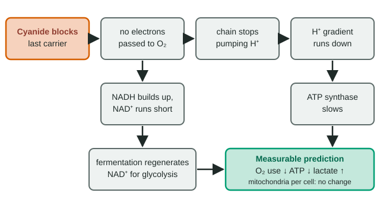

Half an answer is half the points
"Predict the effect of… and justify your prediction" appears on nearly every exam. The usual half-credit answer gets the direction right ("ATP goes down") and stops. The other half-credit answer explains a mechanism but never says what would actually be measured. A full prediction with mechanism starts at the disruption, walks through each cause and effect, and ends at a measurable variable.
Worked example: cyanide and the electron transport chain

Setup: cyanide binds the last protein of the mitochondrial electron transport chain and stops it passing electrons to O₂. Muscle cells (which can also ferment) are treated with it.
- Disruption: electrons can no longer be passed to O₂, so O₂ use falls.
- Next step: electrons back up along the chain, so it stops pumping H⁺ into the intermembrane space.
- Next step: H⁺ keeps flowing back through ATP synthase, so the gradient runs down.
- Measurable result: ATP made by ATP synthase falls sharply.
- Side branch: NADH cannot hand its electrons to the chain, so NAD⁺ runs short and the Krebs cycle stalls. Glycolysis can continue only if NAD⁺ is regenerated, so fermentation increases and the cells release more lactate.
Written answer: "ATP production will fall and lactate release will rise. Cyanide stops electrons passing to O₂, so the chain stops pumping H⁺; the H⁺ gradient that drives ATP synthase runs down, so less ATP is made. NADH cannot be oxidized by the chain, so cells regenerate NAD⁺ by fermentation, producing lactate."
The three parts graders look for
| Part | Example | Missing it looks like |
|---|---|---|
| Direction | ATP falls; lactate rises; mitochondria number unchanged | "ATP is affected." |
| Mechanism | No electron transfer → no pumping → gradient runs down → ATP synthase slows | "ATP falls because of cyanide." |
| Measurable variable | ATP concentration, O₂ used per minute, lactate released | "The cell is damaged." |
A common wrong mechanism: "cells cannot get oxygen." Oxygen still reaches them; cyanide stops it being used. Getting the mechanism right is where the point is earned.
Predicting from a model
In the light reactions, photosystem II passes electrons down a chain to photosystem I and NADP⁺, and refills its electrons by splitting water, which releases O₂. The herbicide DCMU binds a protein just after photosystem II and stops electrons moving on. In one experiment, O₂ release from leaf disks rose steadily in the control (0.18 µmol per disk per minute) but flattened within minutes of adding DCMU.
- O₂ release: down. Electrons cannot leave photosystem II, so it cannot take new ones from water.
- NADPH: down. No electrons reach NADP⁺.
- CO₂ fixed by the Calvin cycle: down. It needs the ATP and NADPH the light reactions make.
- Light reaching the leaf: no change. DCMU does not touch the lamp.
Now a twist: a compound that takes electrons directly from photosystem II, before the block. Trace the model: electrons get a new exit upstream of DCMU, so photosystem II works again and O₂ release resumes, but NADPH stays low because nothing carries electrons past the block. Predictions like this come from following the arrows of the diagram you are given, one at a time.
"No change" is a prediction too
Good predictions say which variables do not change, and why. An uncoupler lets H⁺ leak back across the inner membrane without passing through ATP synthase: ATP falls, heat rises, O₂ use rises (nothing holds back the chain), and the number of chain proteins does not change. Exam prediction grids often include a variable that stays the same to check that you are reasoning rather than guessing "everything goes down".
Proposing the next experiment
A prediction raises a question an experiment can answer. Cells given a drug use less O₂; does the drug block the chain, or slow glycolysis upstream? A next experiment isolates the part in question: give the drug to isolated mitochondria supplied directly with pyruvate. Glycolysis is not present, so if O₂ use still falls, the drug acts inside the mitochondrion. Good follow-up experiments test the mechanism, not just the size of the effect; a higher dose shows a bigger effect but not where the drug acts.